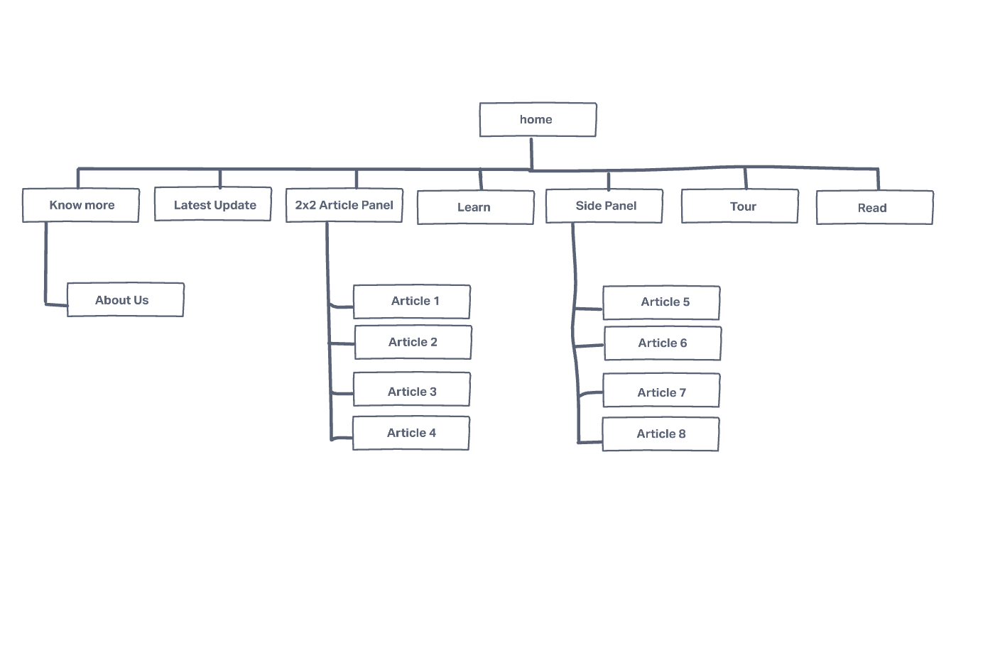
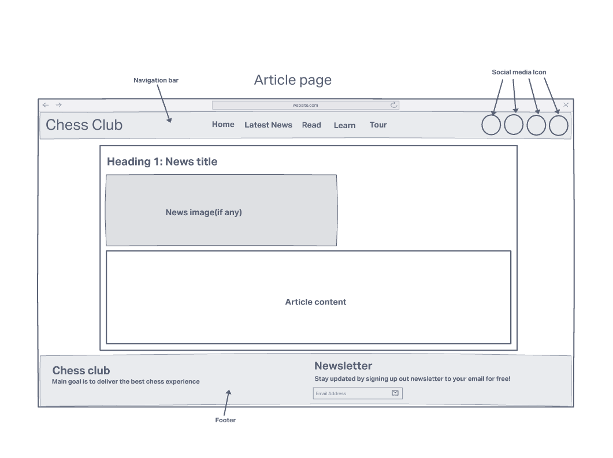
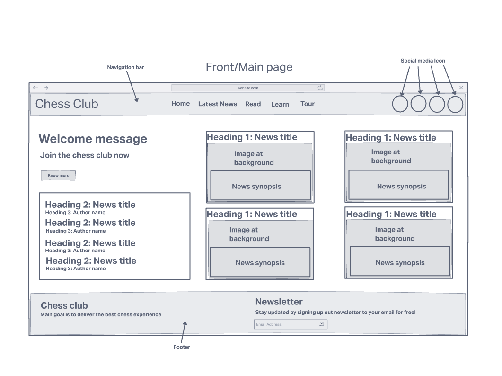
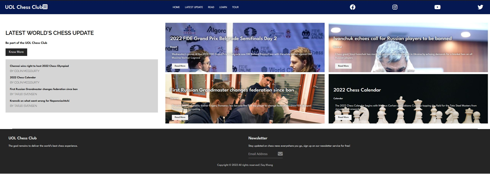
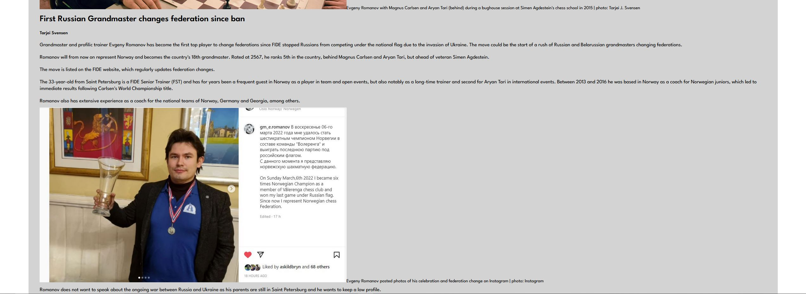
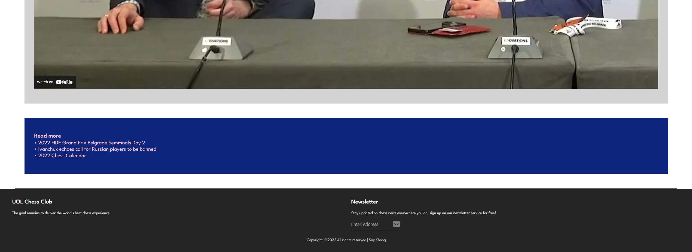

report
Report: Large Coursework

YOUR NAME: Ng Say Khong

Introduction: What is the essential story being told by your site and what type of structure
did you choose to implement.

- My site is built to promote chess to the public and spread the chess community by providing the 
latest chess new and updates to the chess community for them to learn more and for beginners and 
newcomers to take interest in chess. The structure I chose to implement is a basic newsletter website,
a website with a wide range of news article regarding chess for everyone to read.

State 3 things that have inspired you when creating your website. These could include
guest speakers, other websites, artists, developers etc.

-The website chess.com and chess24.com
-GrandMaster Hikaru Nakamura, he inspired me to pick up chess as a hobby
-The overall chess community that made me want which lead to me wanting
to create a website for the chess community

State 3 ways in which your site is accessible.

-The content on the website has a organised management system, such as there is a navigation bar
to redirect the audience
-Color were used with the idea of emphasizing and highlighting the important text and links, 
while keeping the overall site color minimal for it still represents a formal newsletter website
-The website is responsive to multiple device with different screen size, such that mobile users,
computer users and tablet users can all access the website with the same content

State 3 ways in which you have considered usability in your site.

-Headings and text are in different font size to show the difference in its emphasis. 
Example: Article headings are the bigger font while the Article content are a smaller font, this
allows user to understand what they are looking at without much explainations
-Colors were used to differentiate different zone of the website, with the navigation bar in blue,
the body of the website is in white, and the footer of the website is in dark grey, this allows
users to understand the different zones of the website easily.
-Buttons and links on the website will be highlighted when the users hover its cursor or mouse over,
which will allow users to know where they are clicking and the buttons being responsive will help
the user to identify the place/area of the links for them to proceed and click.

State 3 things you had to learn/find out by yourself when creating your site, and describe
how you did that (i.e. what searches you did, any new tools/techniques you learned, any
changes/adaptations you made to a particular resource to make it work with your site).

-I had to learn how to embed Youtube video onto the website as I was required to embed the Youtube
link onto the article webpage for users to watch directly from. I went to Youtube to search for
embed tutorial and I came across a very helpful videos which taught me the steps needed to embed the
Youtube video. And I had to add some changes to make the  Youtube video responsive to the screen size of the
web sites so I added a few CSS styling code to make the embedded video responsive.

-I used the w3school website to look for icons to decorate my websites with proper icons, such
as the social media icons as well as the icons for Chessboard and News. 

-I also needed to make the website responsive in the sense that I wanted to make my links highlighted
when hovered over by a mouse cursor, so I also went to w3school to research about the ways and
techniques to CSS styling, which I learnt about using hover as well as changing the text color
when hovered over.

What aspect(s) of your work do you think worked well and why?

-I think the overall structure of the website is fully thought and well organized, therefore serving
its purpose of a chess newsletter website for everyone. I made sure the websites had a navigation bar,
the body and a footer and used different color to seperate these different sections of the websites,
so the users can distinct between the different sections based on the color itselfs.

-I also liked the accessibility of my website which I have made the websites to be responsive to many 
multiple devices with difference screen size, ranging from computer to mobile devices. By enabiling the
text and images to scale to its screen size, as well as making the nagivation bar a drop-down bar
for smaller screens, will provide easy accessibility to many users when they come across my website.

What aspect(s) of your work could be improved, and how might you do things differently
another time?

-I would have like to further improve the arrangement of the article content of my websites.
If I have another chance to do things differently, I will coded a arrangement structure system that 
automatically arrange the website based on its release date or by alphabetically order whenever the
users want to arrange the article from. This will provide more flexibilities for the users to access
different articles based on their own needs.

What resources were used when creating your work? You should list here any sources of
information, libraries, plug-ins or other code that you used to create your site. You should
also reference any code you've used by inserting comments at the start of the scripts.

The following are the list of resources I used during my work, such as using invision.com to
create the Wireframes and SiteMap. The rest are referenced as below.

Appendices: 
Site Map - 


Wireframes - 
 


Mockups - 
 
">



references:
[1]tipwithpunch, "Embed a YouTube Video in HTML and Make it Responsive (CSS included)",
2018. [Online]. Available: https://youtu.be/9YffrCViTVk [Accessed: 10-Mar-2022]

[2]w3schools.com, "Icon Reference", 2022 [Online]. Available:https://www.w3schools.com/icons/icons_reference.asp
[Accessed; 10-Mar-2022]

[3]googlefont.com, "Google Fonts", 2022[Online]. Available:"https://fonts.google.com/"
[Accessed: 10-Mar-2022]

[4]fontawesome.com, "Fontawesome", 2022[Online]. Available: "https://fontawesome.com/start"
[Accessed. 10-Mar-2022]

[5]w3schools.com, "CSS:hover Selector", 2022. [Online]. Available: https://www.w3schools.com/cssref/sel_hover.asp
[Accessed: 10-Mar-2022]

[6]chansen64, "FIDE Grand Prix Belgrade Semifinals Day 2: Rapport Magic" , 2022[Online].
Available: "https://www.chess.com/news/view/2022-fide-grand-prix-belgrade-semifinals-day-2"
[Accessed: 10-Mar-2022]

[7]Colin McGourty, 2022 "Chennai wins right to host 2022 Chess Olympiad" ,2022[Online].
Available:"https://chess24.com/en/read/news/chennai-wins-right-to-host-2022-world-chess-olympiad"
[Accessed: 10-Mar-2022]

[8]Leon Watson, "Ivanchuk echoes call for Russian players to be banned", 2022[Online].
Available: "https://chess24.com/en/read/news/ivanchuk-echoes-call-for-russian-players-to-be-banned"
[Accessed: 10-Mar-2022]

[9]Tarjei Svensen, "First Russian Grandmaster changes federation since ban", 2022[Online].
Available: "https://chess24.com/en/read/news/russian-grandmaster-changes-federation"
[Accessed 10-Mar-2022]

[10]Colin McGourty, "2022 Chess Calendar", 2022[Online]. Available:
"https://chess24.com/en/read/news/2022-chess-calendar"
[Accessed: 10-Mar-2022]


